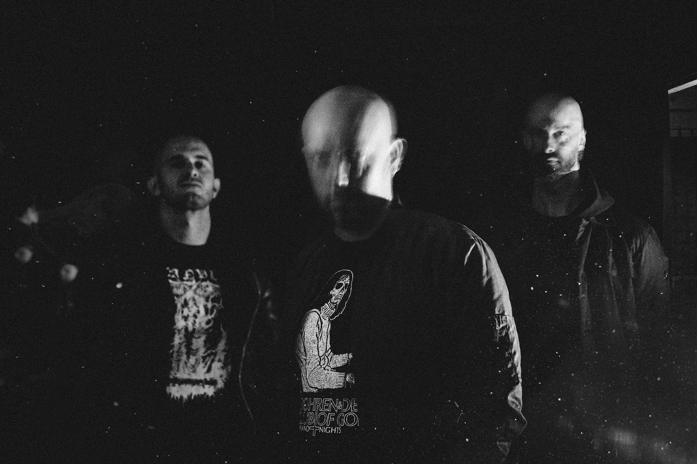
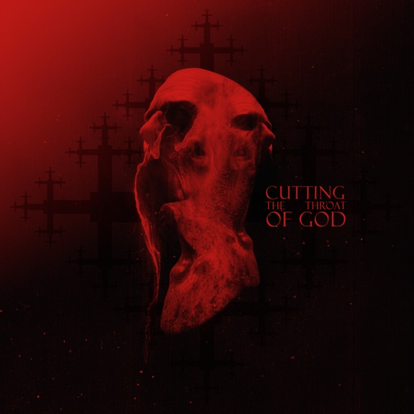

Ulcerate - Cutting the Throat of God
After a short while, Ulcerate came up with their new album. While four years may seem like a long wait, for a band producing such intricate and relentless music—especially on their 7th album—it feels remarkably brief. I’m not even mentioning (well, I am) that they just reached their pinnacle achievement with their latest release, Stare Into Death And Be Still. It's impressive that they didn’t have burnout after that.
I think it is fair to say that Cutting the Throat of God is Ulcerate's most epic work, considering it is their longest album with the highest average track length yet. The band criticized how humanity destroys the world with The Destroyers of All, and with Stare Into Death And Be Still, they challenged death. After all those battles, they now seem invincible, making God kneel with a blade to his throat.
On their 7th LP, Ulcerate evolved the style they invented with Stare Into Death And Be Still. With Magnus Lindberg’s help in mastering, they sound even more atmospheric and trippy than ever. Despite maintaining their asphyxiating high-tempo riffage, you can hear them exploring different soundscapes in tracks like The Dawn is Hollow and Further Opening the Wounds.
It’s also worth mentioning how well they interpreted black metal in their music. This album doesn’t sound like black metal in general, but you can easily hear its elements in To See Death Just Once and the massive, epic closer Cutting the Throat of God. The title track/closer is similar to some other closers they’ve made. The band uses their most significant riffs and absorbing melodies on the closer to make it devastating beyond imagination. These elements intensify the album’s otherworldly atmosphere, once again proving Ulcerate’s ability to transcend death metal boundaries. At the end, they are exuding a pitch-black fire to the whole metal scene.
But my favorite aspect of the album is its compositions. As Ulcerate explores these uncharted soundscapes, they skillfully use these new features to construct the album’s dynamic peaks and valleys. The intersections between these sections are nothing short of phenomenal, creating a sense of seamless progression that feels both deliberate and organic. The band crafts extraordinary journeys by shifting back and forth through their musical themes, never lapsing into repetitiveness despite the abundance of ideas. At the same time, they avoid the pitfalls of sounding like a collection of randomly trafficked segments.
Furthermore, just when you think you've reached the climax of a track, they somehow manage to return with even more awe-inspiring moments. I’ve lost count of how many climaxes are packed into To See Death Just Once. And the second half of Further Opening the Wounds? It’s pure, unrelenting viciousness—an achievement that leaves me in shock every time.
Another incredible achievement on this album is their exploration of different song structures to avoid sounding like their previous work. The band discovers bizarre song structures with Transfiguration In and Out of the Worlds and Undying as an Apparition. Honestly, I couldn’t foresee where these tracks were going and what would happen in the end, yet they still felt like some of the most pulsating tracks they’ve made.
While it doesn’t feel as ground-breaking as Stare Into Death And Be Still did upon its release, this album feels like an upgrade. It may not surpass its predecessor, but it stands as a towering monument of devastation, an awe-inspiring follow-up that cements Ulcerate's place as untouchable masters of their craft.
Standouts: Further Opening the Wounds, To See Death Just Once, Undying as an Apparition, Cutting the Throat of God
Rating: 10/10